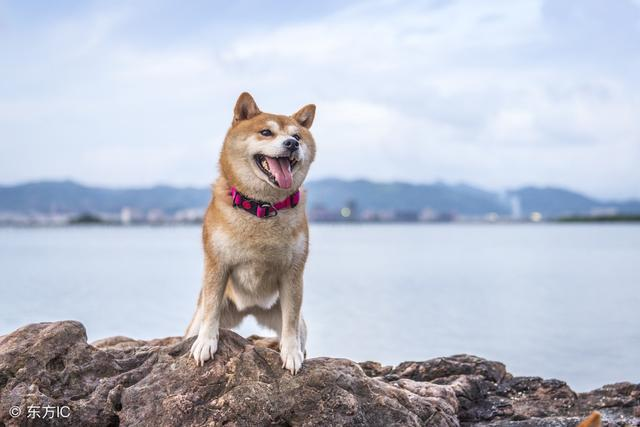
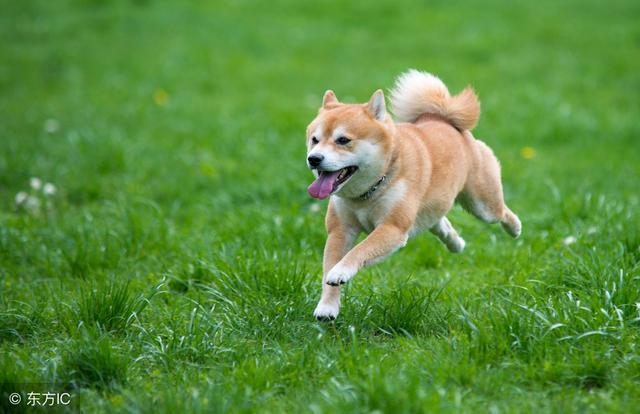
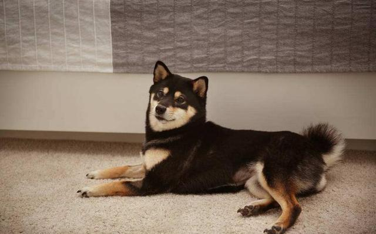
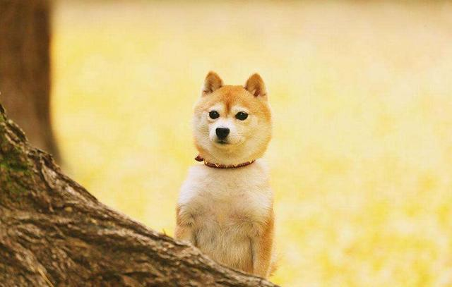
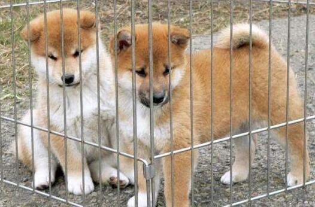
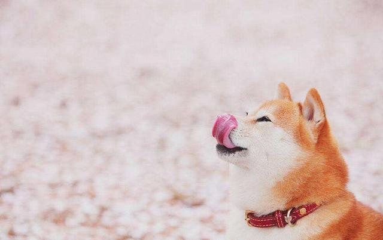
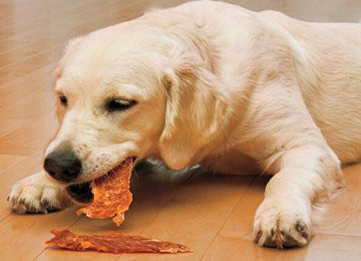
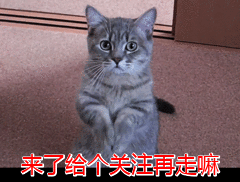

柴犬性格活泼、好动，对外有极强警惕性，能为户主看家护院，但是如果你想饲养柴犬的话，建议你可以先看下这篇文章，不然我怕你会后悔，今天小编为大家说说不选着饲养柴犬的5个理由，看看你会不会后悔！

一、聪明调皮
柴犬聪明但是会很调皮，所以饲养柴犬需要经常训练要是训练不好的话，柴犬就会非常的调皮，会和你唱反调之类的，要是你不想养一只像二哈一样的调皮精，建议你不要饲养柴犬，可以选择一些温顺的狗狗来饲养！
二、精力旺盛
柴犬的精力和雪橇三傻一样都属于精力旺盛的狗狗，饲养每天带柴犬出去起码要运动2~3小时左右，不然它就死赖着不肯回家的，所以如果你没有时间或者不想累趴的话，建议你不要饲养柴犬，不然你会后悔的！

三、会掉毛
柴犬和其它狗狗一样都是会掉毛的，特别是在换毛期，柴犬掉毛的情况会更加的厉害，会搞到满屋都是毛的情况，抱一下身上都会有毛，不过柴犬掉毛的情况还是可以缓解的，主人需要做到清淡喂食，就是让柴犬吃的清淡一点，例如选择主食狗粮的时候应该买低盐低油，高蛋白低脂肪的天然狗粮为主，有效减少狗狗掉毛，如果你不喜欢掉毛的狗狗，建议你可以选择泰迪犬，比熊犬之类的！

四、喜欢咬东西
柴犬和雪橇三傻一样都是喜欢拆家的狗狗，所以如果你不想养一只高破坏的狗狗建议你不要饲养柴犬了，还有柴犬在4~6个月大的时候咬家具会更加的频繁，这是因为柴犬在哪个时候有一个换牙期，牙齿会很痒所以就会想着咬东西，建议对于换牙期的柴犬可以给它买些橡胶玩具或者磨牙零食啃，磨牙零食建议选一些含钙量的对牙齿有帮助，如零食鸡肉干，鸡肉绕薯条，既能磨牙也能补钙，有东西啃柴犬自然也不会乱咬家具了！

五、主要是贵
其实最大的原因就是太贵了，一只柴犬的价格可不便宜，所以饲养柴犬的人也很少，那些能饲养柴犬的人一般经济都不会差到哪里去，所以如果你经济能力不是很稳定的话，建议就不要饲养柴犬了，养条金毛之类的狗狗也是不错的，小编个人比较喜欢拉布拉多犬！

柴犬的饮食健康：
饲养柴犬一定要注意饮食方面的健康，如文中所说柴犬会掉毛，所以主食方面不能吃的太咸太油，不然就会加大掉毛，想要缓解掉毛主食一定要以清淡为主，不止是柴犬其它掉毛的狗狗也是也要，主食狗粮推荐营养均衡好吸收的馋不腻天然狗粮，低盐低油0添加剂，高蛋白低脂肪，既能美毛也能缓解掉毛，平时一定要注意狗狗盐分的吸收！

狗狗训练磨牙零食：
狗狗天生咬合力比较强，所以需要多磨牙，磨牙的方式主人可以用磨牙零食和大骨头，大骨头一定要选用猪牛羊的，而磨牙零食可以选择文中提到的零食，馋不腻鸡肉干和馋不腻鸡肉绕薯条，不仅能训练和磨牙还能补钙！

结语：你个人比较喜欢什么狗狗了？
返回搜狐，查看更多
责任编辑：